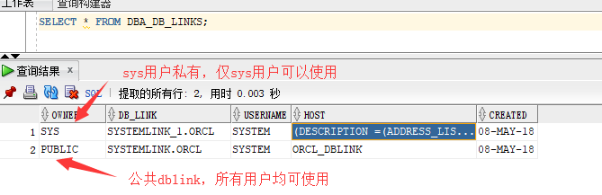

DBlink
当用户要跨本地数据库访问另外一个数据库表中的数据时，本地数据库中必须创建了远程数据库的DBLINK，通过DBLINK可以像访问本地数据库一样访问远程数据库表中的数据。创建DBLINK的时候需要知道待读取数据库的IP地址、ORACLE_SID以及数据库用户名和密码。
在创建DBLINK之前，普通用户必须具有相关的权限才能创建DBLINK，以SYS用户登录到本地数据库可以看到相关的权限（查看其它用户的权限需要登录到该用户使用一下命令查询）：
SQL> SELECT * FROM USER_SYS_PRIVS T WHERE T.PRIVILEGE LIKE UPPER('%LINK%');
USERNAME PRIVILEGE ADM
---------------------- ----------------------------------- -------
SYS DROP PUBLIC DATABASE LINK NO
SYS CREATE DATABASE LINK NO
SYS CREATE PUBLIC DATABASE LINK NO
可以看出，在数据库中DBLINK有3种权限：
CREATE DATABASE LINK：所创建的DBLINK只能是创建者自己使用，别的用户不能使用；
CREATE PUBLIC DATABASE LINK：PUBLIC表示所创建的DBLINK所有用户都可以使用；
DROP PUBLIC DATABASE LINK：删除公共的DBLINK；
如果要使用其他用户创建dblink，需要额外赋权；
SQL> GRANT CREATE PUBLIC DATABASE LINK,DROP PUBLIC DATABASE LINK TO SCOTT; ##替换成实际用户
Grant succeeded.
创建dblink
有两种方式，第一种是在本地的tnsname.ora中添加远程数据库的tns，第二种方式是直接在创建语句中添加远程数据库的信息；
方式一：
1）在本地tnsname.ora中添加远程数据库的配置
orcl_dblink =
(DESCRIPTION =
(ADDRESS = (PROTOCOL = TCP)(HOST = 10.10.10.101)(PORT = 1526))
(CONNECT_DATA =
(SERVER = DEDICATED)
(SERVICE_NAME = orcl1)
)
)
[oracle@oracle admin]$ tnsping orcl_dblink
TNS Ping Utility for Linux: Version 11.2.0.1.0 - Production on 08-MAY-2018 06:14:28
Copyright (c) 1997, 2009, Oracle. All rights reserved.
Used parameter files:
/oracle/11g/product/11.2.0/dbhome_1/network/admin/sqlnet.ora
Used TNSNAMES adapter to resolve the alias
Attempting to contact (DESCRIPTION = (ADDRESS = (PROTOCOL = TCP)(HOST = 10.10.10.101)(PORT = 1526)) (CONNECT_DATA = (SERVER = DEDICATED) (SERVICE_NAME = orcl1)))
OK (640 msec)
2）创建dblink，在sys用户下创建，使用公共dblink；
SQL> CREATE PUBLIC DATABASE LINK
systemlink CONNECT TO system IDENTIFIED BY Oracle_1 USING 'ORCL_DBLINK';
Database link created.
systemlink 为dblink的名字，这个名字将作为查询的名字
system/Oracle_1 为连接到远程数据库的用户名密码，然后在本地数据库中可以使用dblink来访问远程数据库
方式二：
1）直接在创建语句中写远程数据库的信息，其实就是把tnsname.ora里面的内容放在命令里执行了，在sys用户下创建，使用私有的dblink，所有者将属于sys（谁创建私有dblink，所有者将会是谁）；
SQL> CREATE DATABASE LINK systemlink_1
CONNECT TO system IDENTIFIED BY Oracle_1
USING '(DESCRIPTION =
(ADDRESS_LIST =
(ADDRESS = (PROTOCOL = TCP)(HOST = 10.10.10.101)(PORT = 1526))
)
(CONNECT_DATA =
(SERVER = DEDICATED)
(SERVICE_NAME = orcl1)
)
)';
验证
1）在远程数据库的system用户中创建表t1，在本地查看是否能查到；
[oracle@oracle admin]$ sqlplus system/Oracle_1
SQL> create table T1 (id int);
Table created.
SQL> insert into t1 values (1);
SQL> commit;
2）在本地中使用dblink查看，使用sys用户查看；
##使用systemlink
SQL> select * from t1@systemlink;
ID
----------
1
##使用systemlink_1
SQL> select *from t1@systemlink_1;
ID
----------
1
3）在本地中使用dblink查看，使用system用户查看；
##使用systemlink
SQL> select *from t1@systemlink;
ID
----------
1
##使用systemlink_1
SQL> select *from t1@systemlink_1;
select *from t1@systemlink_1
*
ERROR at line 1:
ORA-02019: connection description for remote database not found
可以看到，在system用户下，使用ssytemlink_1将不能查询到远程数据库的信息，因为systemlink_1是私有的；
查看存在的dblink
SQL> SELECT * FROM DBA_DB_LINKS;

删除dblink
对于Private类型的dblink，只有其创建者才能删除dblink。如果是Public的dblink，那么只要有“DROP PUBLIC DATABASE LINK”的权限就可以删除dblink：
使用system用户删除systemlink_1，将会失败；
[oracle@oracle admin]$ sqlplus system/Oracle_1
SQL> drop database link systemlink_1;
drop database link systemlink_1
*
ERROR at line 1:
ORA-02024: database link not found
使用sys则会成功；
[oracle@oracle admin]$ sqlplus / as sysdba
SQL> drop database link systemlink_1;
Database link dropped.
删除systemlink，有'drop public database link'权限就行了。
SQL> drop public database link systemlink; ##注意删除公共dblink的时候，需要加上public，和创建一样；
Database link dropped.